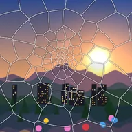

Gebroken glas

Laat het beeld versplinteren als een ruit die bij het midden is geraakt: scheuren lopen uit vanaf het inslagpunt en elke scherf schuift en draait een beetje. Scherven bepaalt in hoeveel stukken het breekt en hoe ver ze bewegen.
Instellingen
| Instelling | Type | Bereik | Standaard |
|---|---|---|---|
| Scherven | Getal | 1 tot 30 | 15 |